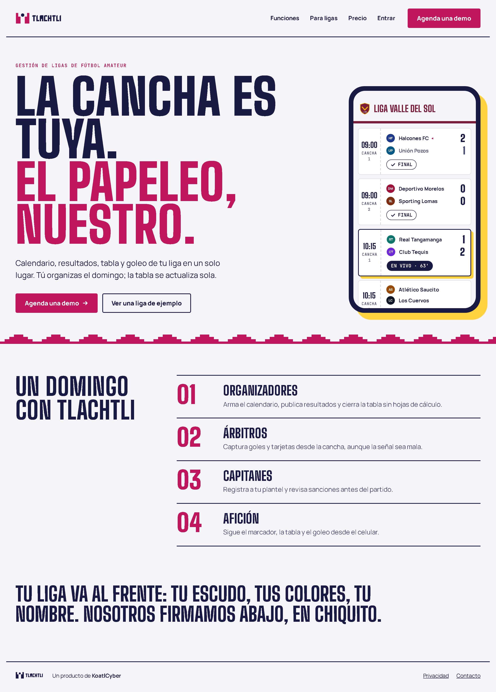
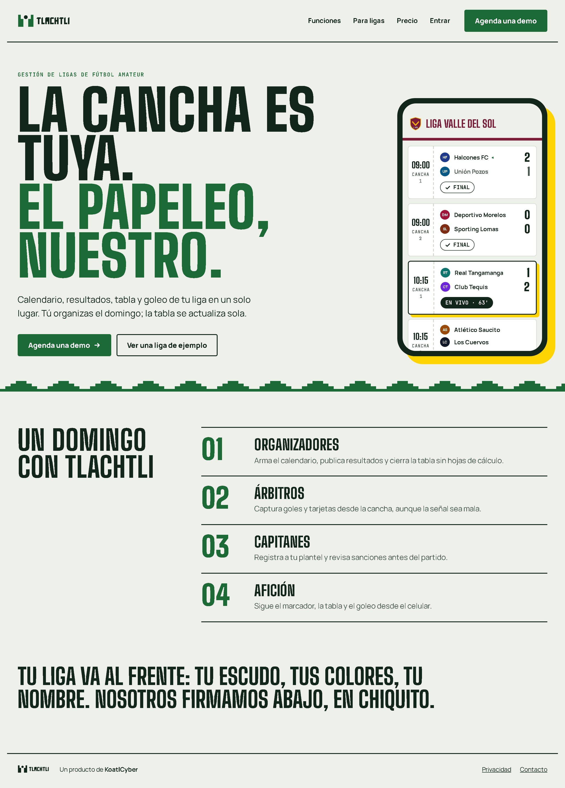
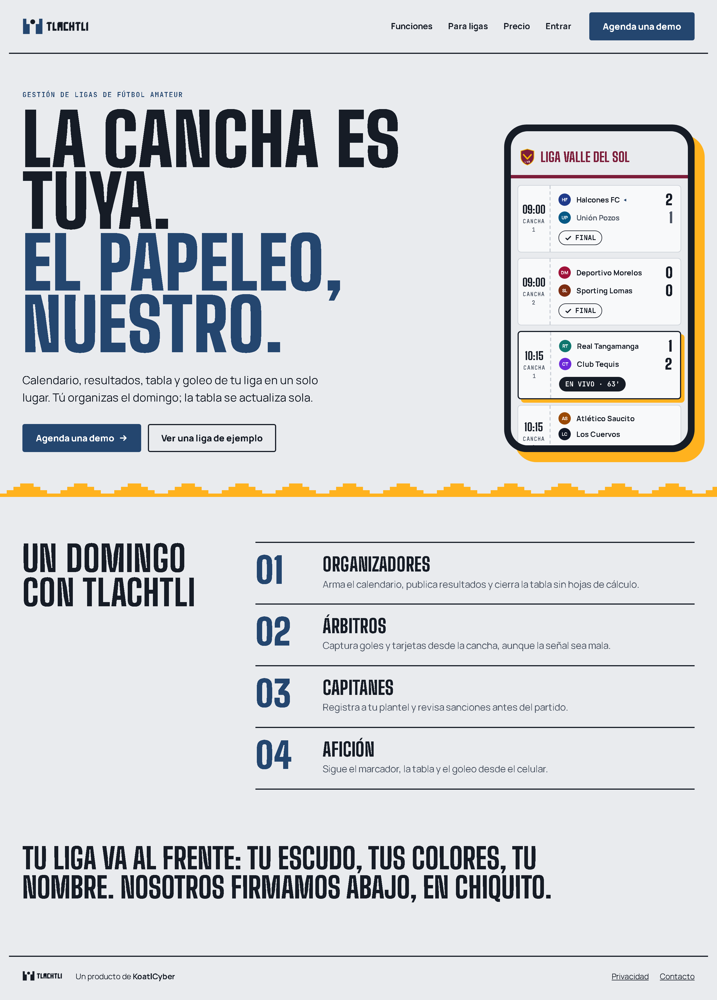

Tlachtli
Rotulado
Rosa mexicano, añil y canario
Los letreros pintados a mano de la tienda de la esquina y las mantas del torneo: color franco y alegre sobre papel blanco.
Claro
#F5F4F8 Fondo#FFFFFF Tarjetas y boletos#1A1B44 Texto y marcadores#4F5075 Texto secundario#C0165E Botón, enlaces, números#FFD23F Sombras, líder, pelota del ícono#1A1B44 Chip «En vivo»#B3261E Derrotas Oscuro
#111233 Fondo#1A1C45 Tarjetas y boletos#F4F3FB Texto y marcadores#ACABCB Texto secundario#FF7AAE Botón, enlaces, números#FFD23F Sombras, líder, pelota del ícono#F4F3FB Chip «En vivo»#FF8F86 Derrotas

Por qué sí. La más alegre y la que más se reconoce de lejos; el rosa no lo usa ninguna app deportiva.
Por qué no. Con ligas de color vino o rosa el acento compite con la liga; ahí conviene bajarlo a añil.
Contraste verificado (AA, 4.5:1)
Par Claro Oscuro texto / fondo 14.9 16.5 texto / superficie 16.4 14.7 suave / fondo 7.0 8.2 suave / superficie 7.7 7.3 acento / fondo 5.5 7.5 acento / superficie 6.0 6.7 sobreAcento / acento 6.0 7.5 sobreRealce / realce 11.3 11.3 sobreVivo / vivo 16.4 16.5 cancelado / superficie 6.4 9.5 pierde / superficie 6.5 7.3 ligaTinta / fondo 9.2 9.6 ligaTinta / superficie 10.0 8.6
Tlachtli
Llano
Pasto, cal y tarjeta amarilla
El campo del domingo: pasto recién regado, las líneas de cal y la tarjeta amarilla del árbitro.
Claro
#EEF1EA Fondo#FFFFFF Tarjetas y boletos#12261A Texto y marcadores#4B5A50 Texto secundario#1C6B37 Botón, enlaces, números#FFD400 Sombras, líder, pelota del ícono#12261A Chip «En vivo»#B3261E Derrotas Oscuro
#0C1A11 Fondo#13251A Tarjetas y boletos#EDF3EC Texto y marcadores#A3B4A8 Texto secundario#62D68D Botón, enlaces, números#FFD400 Sombras, líder, pelota del ícono#EDF3EC Chip «En vivo»#FF8F86 Derrotas

Por qué sí. Se lee como fútbol al instante y es la más tranquila para pantallas con mucha tabla.
Por qué no. Verde con amarillo es lo esperado en deporte; se distingue menos de otras apps.
Contraste verificado (AA, 4.5:1)
Par Claro Oscuro texto / fondo 14.0 15.9 texto / superficie 15.9 14.3 suave / fondo 6.4 8.2 suave / superficie 7.3 7.4 acento / fondo 5.7 9.8 acento / superficie 6.5 8.8 sobreAcento / acento 6.5 9.8 sobreRealce / realce 11.1 11.1 sobreVivo / vivo 15.9 15.9 cancelado / superficie 6.4 9.4 pierde / superficie 6.5 7.3 ligaTinta / fondo 8.8 9.5 ligaTinta / superficie 10.0 8.5
Tlachtli
Reflector
Asfalto, concreto y luz de sodio
La cancha de fútbol rápido entre semana: concreto gris, malla, y el ámbar de las lámparas a las nueve de la noche.
Claro
#E9EBEE Fondo#F8F9FA Tarjetas y boletos#161C26 Texto y marcadores#4C5563 Texto secundario#24466F Botón, enlaces, números#FFB21E Sombras, líder, pelota del ícono#161C26 Chip «En vivo»#B3261E Derrotas Oscuro
#0F141B Fondo#182029 Tarjetas y boletos#ECEFF3 Texto y marcadores#A3ADBA Texto secundario#FFB21E Botón, enlaces, números#FFB21E Sombras, líder, pelota del ícono#ECEFF3 Chip «En vivo»#FF8F86 Derrotas

Por qué sí. La más sobria y urbana; el ámbar deja al color de la liga como lo más vivo de la pantalla.
Por qué no. En modo claro el acento azul pizarra es serio; pierde parte de la energía de fin de semana.
Contraste verificado (AA, 4.5:1)
Par Claro Oscuro texto / fondo 14.3 16.0 texto / superficie 16.2 14.3 suave / fondo 6.3 8.1 suave / superficie 7.1 7.2 acento / fondo 8.1 10.2 acento / superficie 9.1 9.1 sobreAcento / acento 9.6 9.5 sobreRealce / realce 9.5 9.5 sobreVivo / vivo 16.2 16.0 cancelado / superficie 6.5 9.6 pierde / superficie 6.2 7.5 ligaTinta / fondo 8.4 9.8 ligaTinta / superficie 9.5 8.7